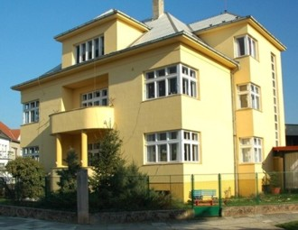

Výsledky přijímacího řízení do Mateřské školy U Bečvy 2, Přerov pro školní rok 2026/2027 si můžete zobrazit níže:
Moderní přístup k předškolní výchově.
Individuální péče pro každé dítě.

Kvalitní vzdělání pro budoucnost.